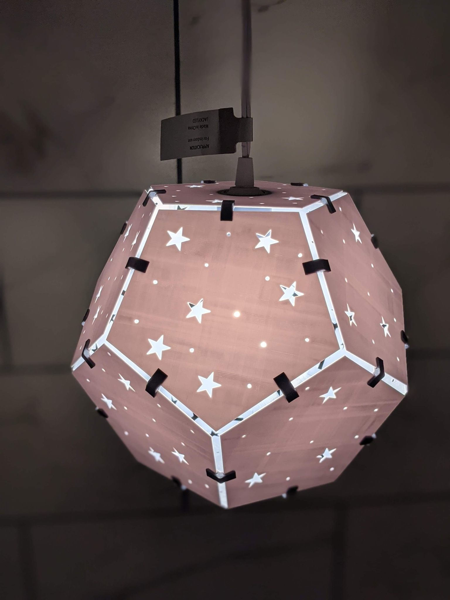
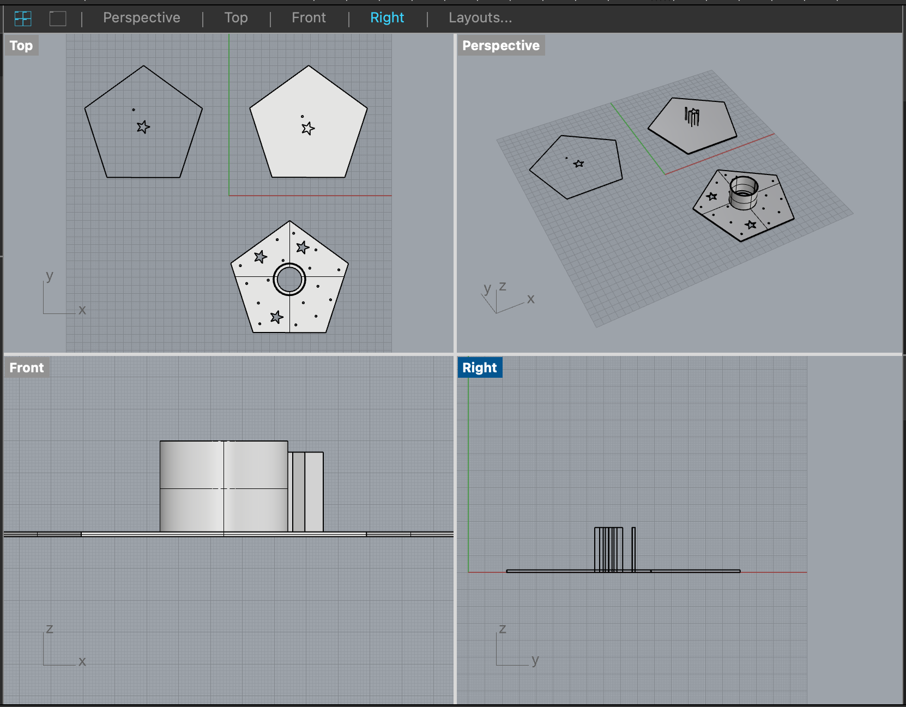
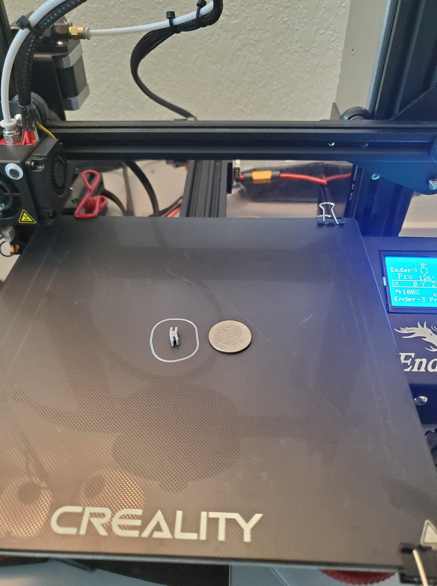
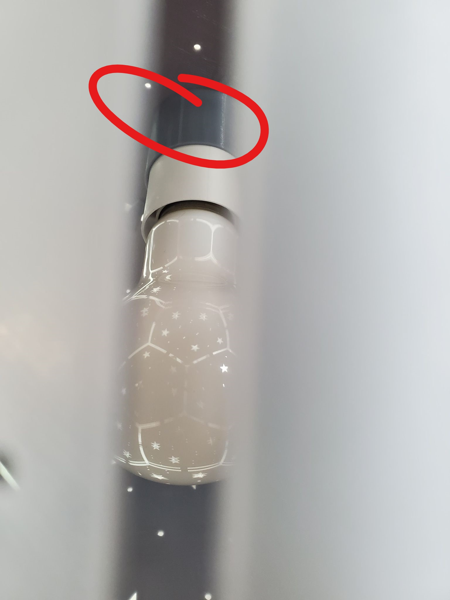
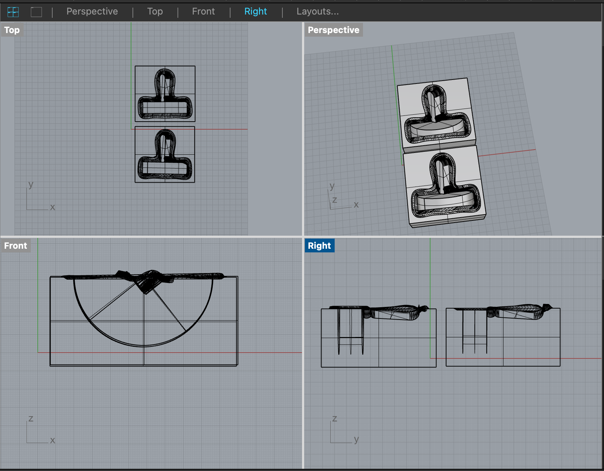

For Part 1, I finished building my lamp.
Last week, I created a one polysurface dodecahedron as the foundation for my lamp. My plan was to print it in one go until Prof Nadya's recommendation to me in class.
She suggested that I consider printing out each side of the dodecahedron and use clips to connect them. This way, I didn't have to print the lamp all at once, plus I could build upon my previous assignment (Grasshopper clip and nesting object)
Most profs know best, so I decided to incorporate her feedback into my overall design. I re-did my design with 5 different variations (three for Style 1, 2 and 3, two for Style 4, and one for Style 5) to achieve the 12-sided polyhedra.
The variations were based on the stars and circle cutouts to the design. To complete the build, I printed out 30 mini versions of my updated Grasshopper clips to piece them all together.
After completing all the 3D printing, which took a few days, I assembled the pieces and built my lamp! A more detailed journey is below.

I started by updating my Rhino file, which involved creating each face and then coming up with different variations using stars/circle cutouts.
There was definitely some iteration happening with making sure my pentagons were tall/wide enough and thick enough for the lamp.

After designing the 5 different variations, I 3D printed them. It took several days to print them because each face took 2 hours each!
Also, I had some issues with printing in which the PLA was peeling and separating from the bed. I releveled the bed and sprayed some hair spray, which seemed to address the issue.
The next step was designing the clips. I had to change the size and thickness of the clip to fit my lamp sides, as well as the angles.
I messed up a few times because I didn't realize rotations in Grasshopper default to radians (not degrees) - oops. So 116.565° is not the same in radians...
For my first iteration, the clip was definitely not 116°. Oh, and the clip was smaller than a quarter.

Finally, I had all my parts printed out. The one thing to note is that one of the dodecahedron faces has an opening large enough for the plug to fit through...
...as well as a tube that extends within the dodecahedron to keep the lamp innerds in place. Credit to Anthony (my partner, roommate and 3D subject matter expert) for this.

Applicable .STL and .GH files are below for reference:
Rhino Lamp Working File
Lamp Style 1
Lamp Style 2
Lamp Style 3
Lamp Style 4
Lamp Style 5
Clip (STL)
Clip (GH)
For Part 2, I am still in process of designing my mold in Rhino.
I wanted to create a mold to cast large characters in DnD for. To keep things generic, I aimed to create an exclamation mark on a 3"x3" base.
On Thingiverse, I found an exclamation mark token in which I painstakingly had to work on in Rhino.
I used "DraftAngleAnalysis" to identify my parting line, though needed add some manual labor, "MergeAllCoplanarFaces", and then "Split."
This was definitely something I had to lean on Junchao for (yay, rockstar TA!).
After the object was split, I went through yet another challenging journey of creating the positives following Prof Nadya's tutorial very closely.
As the days went on, Rhino became progressively fussy to the point in which it would crash every 10 minutes, have constant issues with viewports, etc.
All of that is to say, the hours upon hours I poured in really only got me to the positives of the mold.

Having incredibly short-term memory, I now need to recall how to create the negatives of the mold. This way, I can add the printing keys and sprues before printing out my mold.